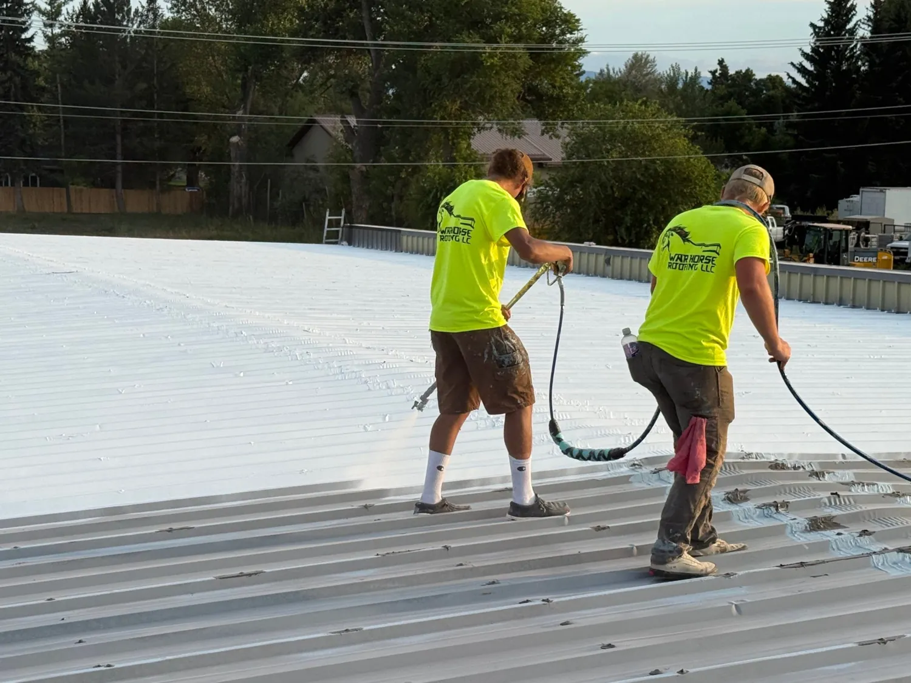

Can you coat a roof that leaks?
Sometimes. A leak around one vent is a different job from a roof that holds water in several places. We check the surface and past repairs before recommending a coating.
Roof coating questionsFort Washakie, Wyoming
Before you price a tear-off, find out whether you can keep the roof you have. We check the seams, the drainage, and the spots you’ve had to patch more than once. If the roof can be restored, our Fremont County crew can waterproof it with a Conklin roofing system built for that surface.
